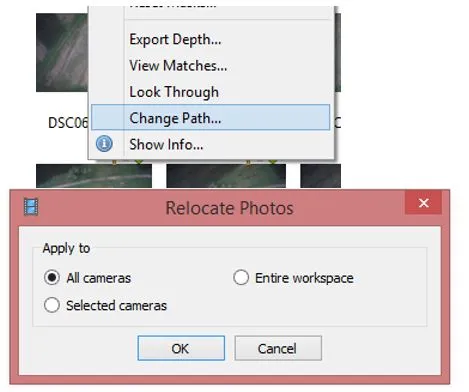
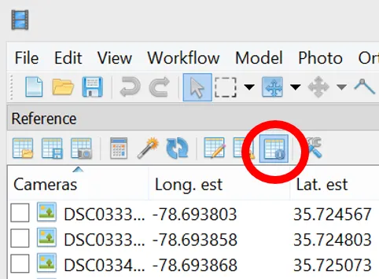

Lab: Measuring volumes in Agisoft Metashape
Analysis of UAS data processing results
Measurements in Agisoft Metashape
Task
Perform measurements in Agisoft Metashape:
- calculate distance, area and volume measuremens
- generate profiles and countour lines
Data
- Imagery from 02/06/2018 Lake Wheeler flight
- Agisoft project files with processed data
- Imagery for the volume and area measurements acquired 07/02/2017 at Wake Waste Transfer check localizations
Performing measurements on a model
Data Preparation
In the first part of the assignment you will be working with data from 02/06/2018 Lake Wheeler flight. Because the processing is very time consuming, the processed data (stored in the Agisoft project files is provided).
After opening the 2018_02_06_assignment.psx file, you should see generated orthomosaic and DSM in the Workspace pane.
All you have to do is to indicate the new location of the pictures.
In order to do that right clik on any of the pictures in the Pictures pane and choose Change Path... and in the dialog window mark the All cameras option. This will automatically apply the updated location to all the pictures in the project.

Distance measurement
Using the Ruler instrument for the toolbar menu calculate the length of the longer side of the bigger building.
Distance between GCPs
To measure distance between two markers in Agisoft:
- Select both markers to be used for distance measurements on the Reference pane using CtrlCtrl button
- Select Create Scale Bar command form the 3D view context menu (Right click on the marker). The scale bar will be created and an instant added to the Scale Bar list on the Reference pane.
In order to see the estimated values, you need to be in the estimates display - on the Reference pane, following button needs to be active

Compare distance between UAV 9 and UAV 12 estimated by Agisoft Metashape with the distance calculated from coordinates:
| GCP | Easting [m] | Northing [m] | ASL [m] |
|---|---|---|---|
| UAV 9 | 636744.300 | 219381.308 | 109.971 |
| UAV 12 | 637057.310 | 219733.909 | 116.12 |
Remember to take into account elevation difference in your calculations. Show your work
How much (in meters/percentage) do these values differ?
Euclidean Distance formula: \[ d = \sqrt{(x_2 - x_1)^2 + (y_2 - y_1)^2 + (z_2 - z_1)^2} \]
Calculate distance in meters: \[ \text{Difference in meters} = \left| \text{Metashape distance} - \text{Calculated distance} \right| \]
Calculate percent difference: \[ \text{Percentage difference} = \left( \frac{\text{Difference}}{\text{Calculated distance}} \right) \times 100 \]
Distance between cameras
To measure distance between two cameras in Agisoft:
- Select the two cameras on the Workspace or Reference pane using CtrlCtrl button. Alternatively, the cameras can be selected in the Model view window using selecting tools from the Toolbar.
- Select Create Scale Bar command form the 3D view context menu. The scale bar will be created and an instant added to the Scale Bar list on the Reference pane.
Measure distance between cameras DSC03341 and DSC03752.
Performing measurements on DSMs
Switch to Ortho view (double click on the Orthomosaic in the Workspace pane)
Point and distance measurement:
In the western part of the area, close to the forest edge, there are some sheaves.
sheaf (sheaves) - a bundle of grain stalks laid lengthwise and tied together after reaping.
- Using Ruler instrument or Draw Polyline from the Toolbar of the Ortho view estimate the diameter and height of the very north sheaf.
Contours:
- Select
Generate Contours...command from Tools menu. - Set round values for Minimal altitude, Maximal altitude parameters as well as the Interval for the contours.
- Set the transparency for the contours for 50% and do not display the labels. (You can do it in
Preferencesin the Contours context menu in the Workspace pane (contours are in the Shapes folder))
Cross Section:
Choose some interesting place for cross section (you can see from the contours where are some variations in terrain)
- Indicate a line to make a cut of the model using Draw Polyline tool from the Ortho view toolbar (double click ends the line).
- Right button click on the polyline/polygon and select
Measure...command from the context menu. - Include in the report your profile with the and its location.
Volume and area measurements
In this part of the assignment you will be working with imagery acquired Feb 2017 at Wake Waste Transfer.
Calculate the volume and the area of the “waste pile” (for excact location see Google Maps)
Tips
- Follow the Agisoft’s tutorial on volume measurements
- the delimitation of the pile is up to you - you can examine whatever part of the pile you want to process
- use a high (or custom) face count setting in mesh generation to have detailed mesh
- remember to close mesh holes (level 100%)
- you can additionally generate contours